CS 180 Project 3
Fun with Flow Models · Kavish Kondap
Overview
This project covers generating and editing images with flow models. In Part A, I use a pretrained model to denoise images, generate images from noise, and create visual anagrams and hybrid images. In Part B, I implement a UNet and train it on MNIST, first for single-step denoising and then for flow matching with time and class conditioning.
Part A: Exploring the Power of Flow Models
For this part, I use PixNerd-XXL-P16-T2I at 512 × 512. The images are center-cropped, resized, and normalized to [−1, 1]. I use a step size of 0.02 and a seed of 180, with seeds 180–184 for the five generated samples.
Part A 1.1: Constructing Noisy Training Inputs
I use the tree image below for Parts 1.1–1.5. To create the noisy images, I interpolate between the image and Gaussian noise. I use the same noise for all three times, so the difference comes from how much of the original image is kept. At t = 0 the result is pure noise, and at t = 1 it is the original image.
def interpolate(image, noise, t):
return (1 - t) * noise + t * image
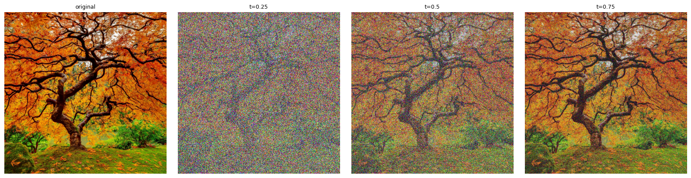
Part A 1.2: Classical Denoising
For the Gaussian blur baseline, I first divide the noisy image by t to restore the image amplitude. I try σ = 1, 2, 4, 8, and 16, and choose the result with the lowest mean squared error against the original image. The chosen values are 8, 2, and 1 for t = 0.25, 0.50, and 0.75, respectively. At t = 0.25, the blur removes the noise but also removes most of the smaller branches and leaves.
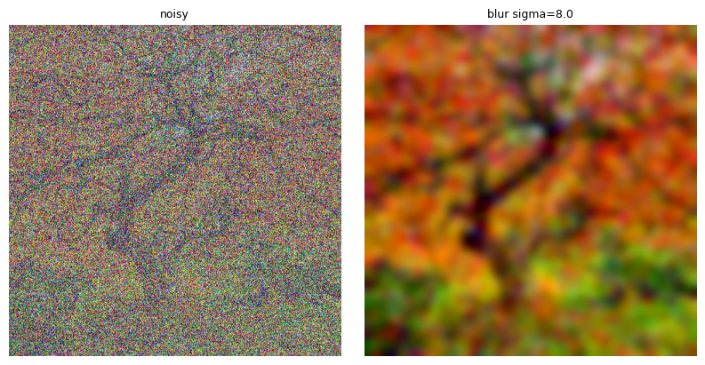
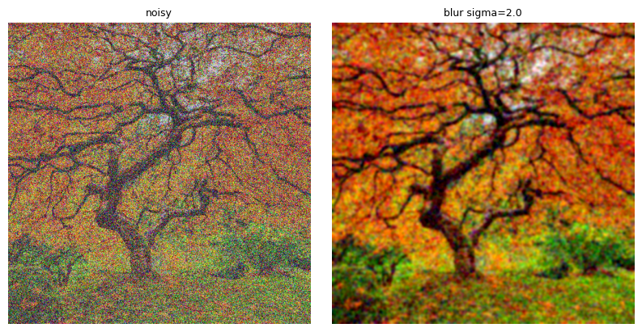
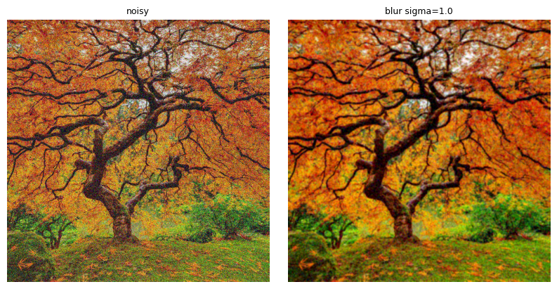
Part A 1.3: One-Step Denoising
Here I use one velocity prediction from the model, with the prompt "a high quality photo". I multiply the velocity by the remaining time and add it to the noisy image to estimate the clean image. The result at t = 0.25 brings back the main tree shape, but the smaller branches and leaves are less detailed than in the original.
def one_step_denoise(x, t, condition, predict_velocity):
v = predict_velocity(x, t, condition)
return x + (1 - t) * v
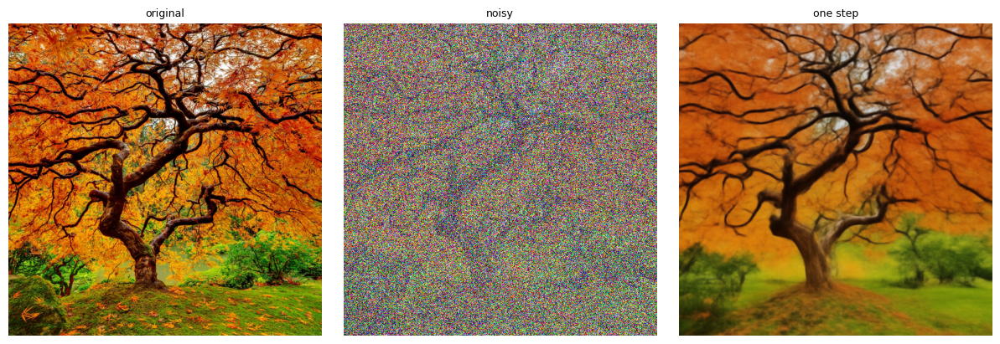
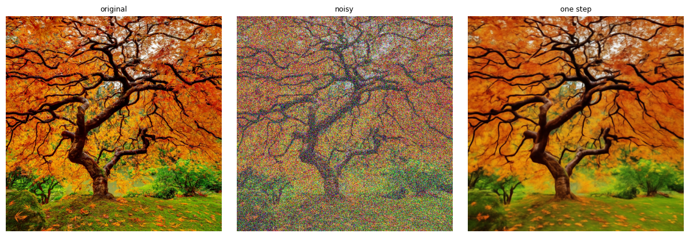
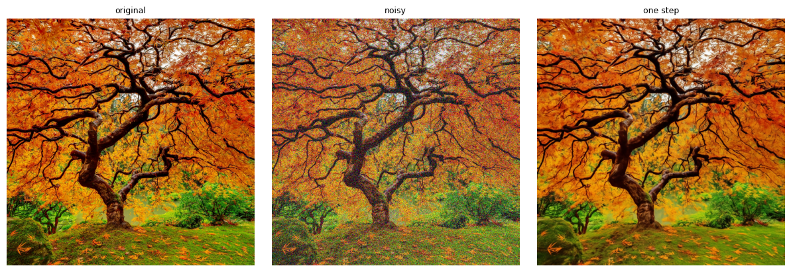
Part A 1.4: Visualizing Velocity
To see what the model adds, I compare the predicted update with the ground-truth update, x1 − xt. The error map is the root mean square difference across the RGB channels at each pixel, computed before clipping or scaling. All updates use the same symmetric color scale, with zero at middle gray, and all error maps use the same limits.
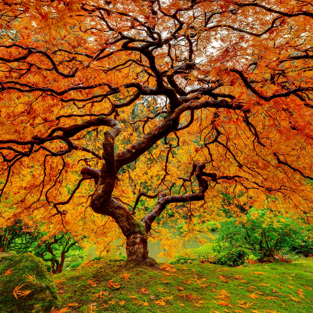
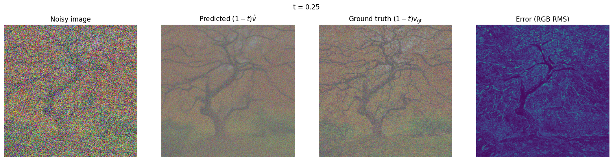
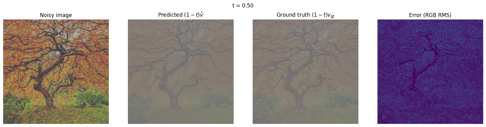
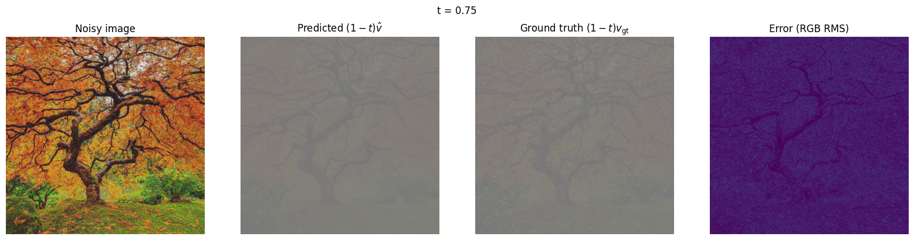
Part A 1.5: Iterative Denoising with Euler Sampling
Instead of making one prediction, I take a small step and recompute the velocity at the new image and time. I start from the same t = 0.50 input and take 25 updates with a step size of 0.02. I save the initial image, every fifth update, and the final result. The last step is shortened when needed so that sampling ends at t = 1.
def euler_sample(x_start, t_start, step_size, velocity):
x = x_start.clone()
t = float(t_start)
states = [(t, x.clone())]
steps = math.ceil((1- t_start) /step_size - 1e-10)
for i in range(steps):
next_t = min(t_start + (i + 1) * step_size, 1.0)
if i == steps - 1:
next_t = 1.0
v = velocity(x, t)
x = x + (next_t - t) *v
t = next_t
if (i + 1) % 5 == 0 or t == 1:
states.append((t, x.clone()))
return x, states
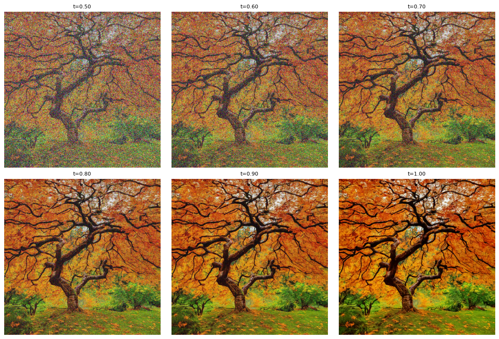
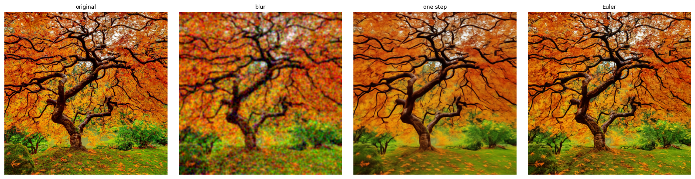
The one-step result has the lowest reconstruction error for this image. Euler denoising adds detail, but some of that detail differs from the original. The mean squared errors below are computed on the image tensors.
| Method | Mean squared error |
|---|---|
| Gaussian blur | 0.067496 |
| One-step denoising | 0.044182 |
| Euler denoising | 0.052851 |
Part A 1.6: Generating Images from Noise
I use the same Euler sampler, but start from pure Gaussian noise at t = 0 and take 50 updates. All five samples use "a high quality photo", with seeds 180–184. All five results are people, even though the prompt does not specify a person. Several faces are blurry or distorted.

Part A 2.1: Classifier-Free Guidance
For classifier-free guidance, I predict the velocity with the photo prompt and with an empty prompt, then combine the two using w = 7. Both predictions use the same image and time. I use the same five initial noises as above so that the results can be compared directly.
def cfg_velocity(x, t, condition, w, predict_velocity, null_condition=''):
v_c = predict_velocity(x, t, condition)
v_u = predict_velocity(x, t, null_condition)
return v_c + w * (v_c - v_u)

The guided results have clearer faces and more consistent portrait framing, but they are still all people. Guidance improves the detail here without changing the preference for portraits under this prompt.
Part A 3.1: Image-to-Image Editing
To edit an image, I interpolate it with noise at a starting time and then sample from that time to 1 with CFG. I use the prompt "a high quality photo", w = 7, and a step size of 0.02. Each set below shows the original followed by starting times 0.02, 0.04, 0.06, 0.10, 0.14, 0.25, and 0.50. Smaller starting times add more noise and allow larger changes.
def edit(image, noise, t_start, condition, predict_velocity, w=7, step_size=0.02):
x = interpolate(image, noise, t_start)
def velocity(x, t):
return cfg_velocity(x, t, condition, w, predict_velocity, null_condition)
result, _ = euler_sample(x, t_start, step_size, velocity)
return result
Campanile

Tree
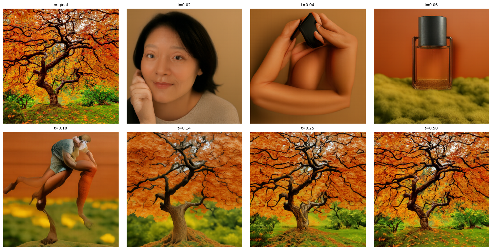
F1 car
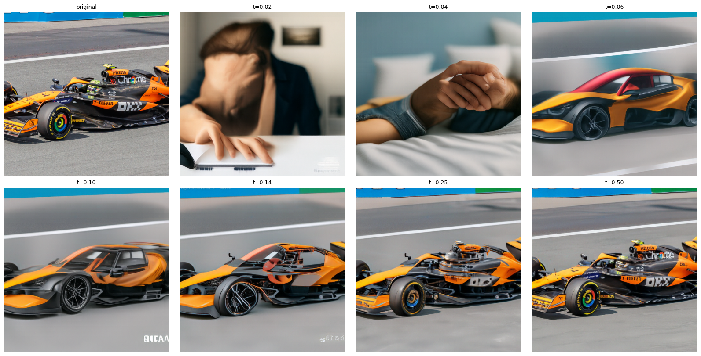
The low starting times can change the subject completely: the tree becomes portraits and other objects, and the F1 image becomes people before turning back into cars. At the larger starting times, the original tree branches and car shape are preserved.
Web image and drawings
I repeat the same procedure and starting times on a Curious George image from the web and my drawings of a car and a tree. The low starting times turn Curious George into portraits, while the larger times keep the cartoon. For the drawings, the low starting times mostly produce gray shapes; the car and tree become recognizable as the starting time increases.
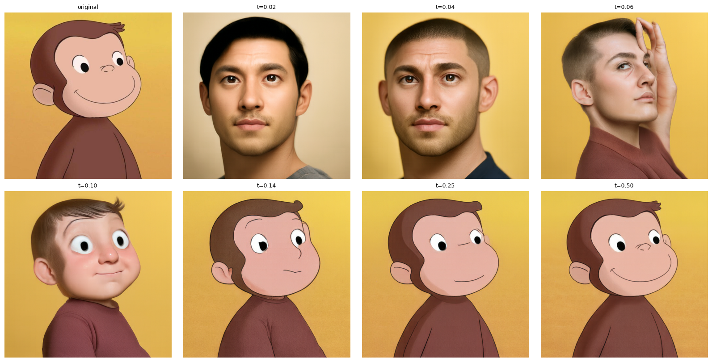
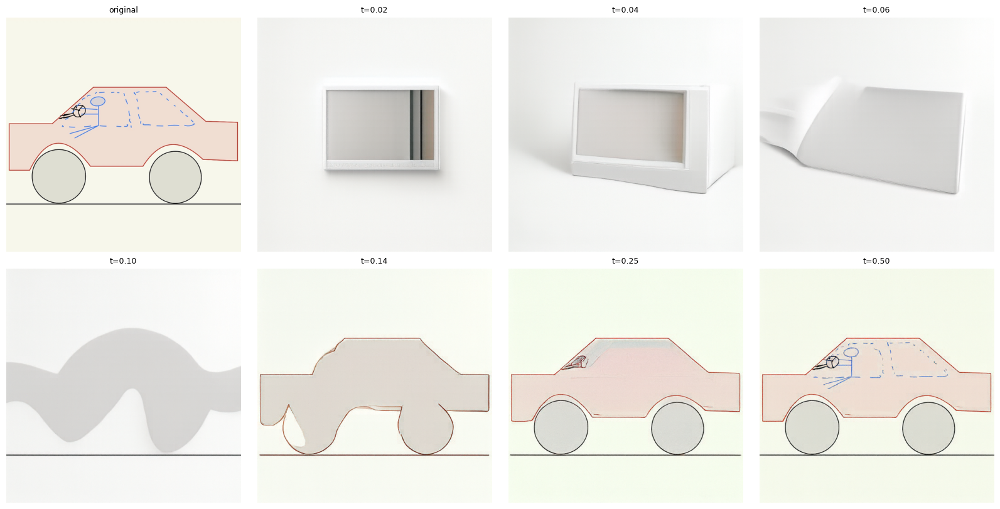
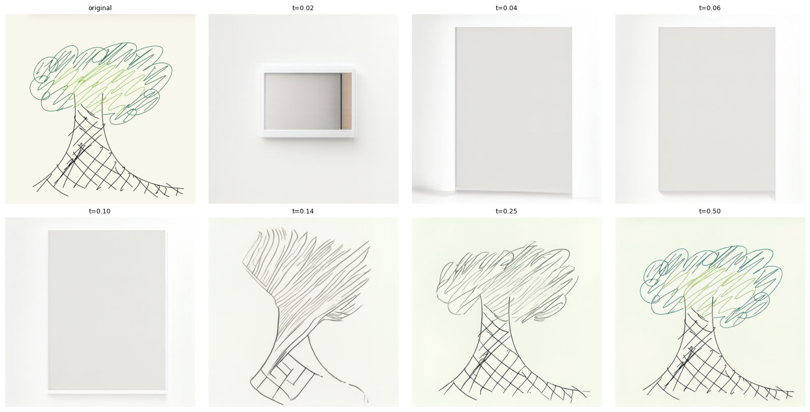
Part A 3.2: Text-Guided Image Editing
Here I use the same procedure, images, starting times, and noise, but replace the generic photo prompt with a prompt describing the edit. At smaller starting times, the prompt has more influence. At larger starting times, more of the original image remains.
Campanile
Prompt: a yellow #2 pencil standing straight up on a desk.
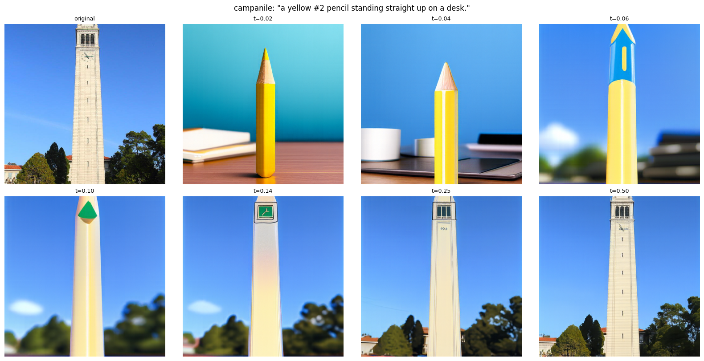
Tree
Prompt: a dystopian scene with all nature burned down, in the desolate remains of a forest fire.
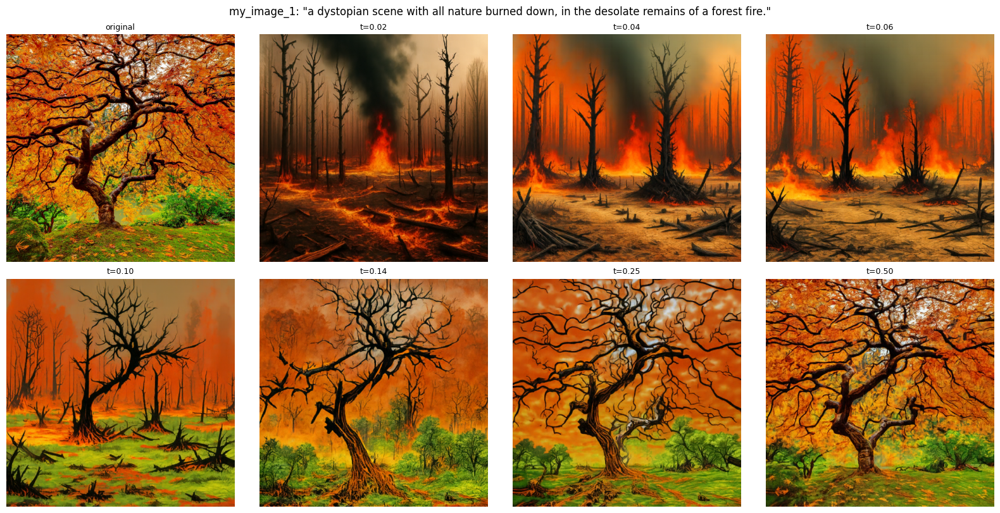
F1 car
Prompt: a clown car driving down the road with a clown inside.
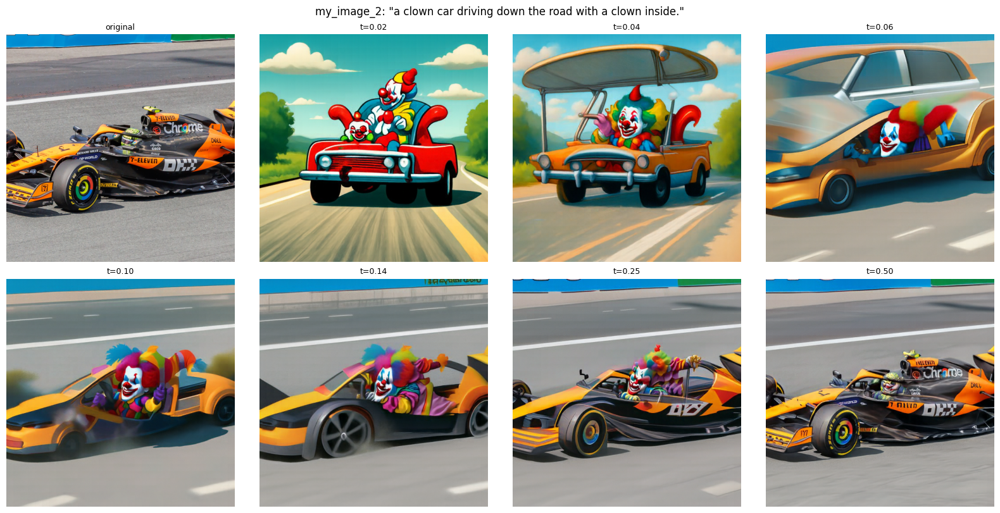
The Campanile becomes a pencil at the low starting times, while the tree becomes a burned forest. In the car example, the low starting times produce a clown car, and the middle times mix the clown colors and driver with the original F1 car. By t = 0.50, all three results are much closer to their inputs.
Part A 3.3: Visual Anagrams
I predict a guided velocity for the upright image with the first prompt, then rotate the image 180 degrees and predict a velocity with the second prompt. I rotate that prediction back and average the two velocities before each Euler update. Each result below is shown upright and rotated, with its two prompts.
def visual_anagrams(noise, condition_a, condition_b, predict_velocity, w=7, step_size=0.02):
def velocity(x, t):
v_a = cfg_velocity(
x, t, condition_a, w, predict_velocity, null_condition
)
v_b = cfg_velocity(
rotate180(x), t, condition_b, w, predict_velocity, null_condition
)
return (v_a + rotate180(v_b)) / 2
result, _ = euler_sample(noise, 0, step_size, velocity)
return result
Upright: an oil painting of a jelly fish
Rotated 180°: an oil painting of a tree
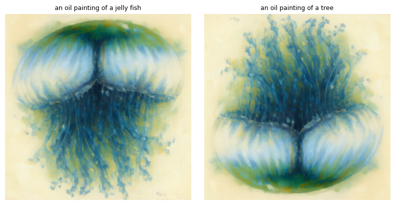
Upright: an oil painting of a sunflower
Rotated 180°: an oil painting of a lion's face
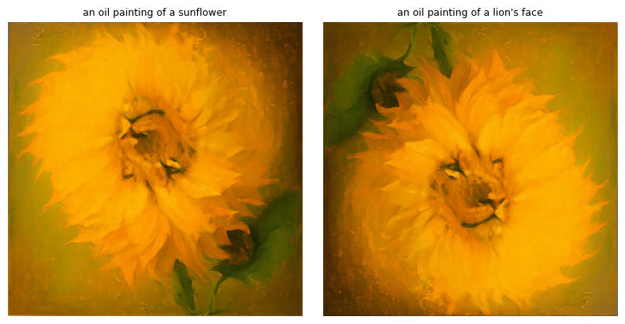
The jellyfish tentacles become the branches of the tree when rotated. In the second result, the sunflower petals also form the lion’s mane, though the lion’s face is less distinct.
Part A 3.4: Hybrid Images
For hybrid images, I combine the low frequencies of one guided velocity with the high frequencies of another at each Euler step. I use a Gaussian blur with kernel size 265 and σ = 16. The low-frequency prompt controls the distant view, while the high-frequency prompt controls the close-up detail.
def make_hybrids(noise, condition_a, condition_b, predict_velocity, w=7, step_size=0.02):
def velocity(x, t):
v_a = cfg_velocity(
x, t, condition_a, w, predict_velocity, null_condition
)
v_b = cfg_velocity(
x, t, condition_b, w, predict_velocity, null_condition
)
return lowpass(v_a) + v_b - lowpass(v_b)
result, _ = euler_sample(noise, 0, step_size, velocity)
return result
Distant: a black and white engraving of a butterfly
Close: a black and white engraving of a detailed city skyline
Distant: a black and white engraving of an owl
Close: a black and white engraving of shelves full of books
The skyline and books are clear in the full-size views, but the butterfly and owl are harder to make out in the reduced views. The close-up subjects come through more strongly in these results.
Part B: Flow Matching from Scratch
In this part, I train my own models on MNIST. I first train a UNet to remove a fixed amount of noise in one step, then train time-conditioned and class-conditioned versions to predict velocity and generate digits from noise.
Part B 1.1: Implementing the UNet
I implement the UNet with convolution, downsampling, and upsampling blocks. Each convolution uses batch normalization and GELU. The image goes from 28 × 28 to 14 × 14 and then 7 × 7. Average pooling reduces it to 1 × 1, and a transposed convolution brings it back to 7 × 7. On the way back up, I concatenate the matching features from the downsampling layers as skip connections.
class UnconditionalUNet(nn.Module):
def __init__(
self,
in_channels: int,
num_hiddens: int,
):
super().__init__()
# ===== your code here! ====
d = num_hiddens
self.conv = ConvBlock(in_channels, d)
self.down1 = DownBlock(d, d)
self.down2 = DownBlock(d, 2 * d)
self.flatten = Flatten()
self.unflatten = Unflatten(2 * d)
self.up1 = UpBlock(4 * d, d)
self.up2 = UpBlock(2 * d, d)
self.final_conv = ConvBlock(2 * d, d)
self.output = nn.Conv2d(d, in_channels, 3, padding=1)
# ===== end of code ====
def forward(self, x: torch.Tensor) -> torch.Tensor:
assert x.shape[-2:] == (28, 28), "Expect input shape to be (28, 28)."
# ===== your code here! ====
x1 = self.conv(x)
x2 = self.down1(x1)
x3 = self.down2(x2)
x = self.flatten(x3)
x = self.unflatten(x)
x = self.up1(torch.cat([x, x3], dim=1))
x = self.up2(torch.cat([x, x2], dim=1))
x = self.final_conv(torch.cat([x, x1], dim=1))
return self.output(x)
# ===== end of code ====
Part B 1.2: Using the UNet to Train a Denoiser
I create noisy inputs by adding Gaussian noise to MNIST images in [0, 1]. Below I use the same image and noise at σ = 0, 0.2, 0.4, 0.5, 0.6, 0.8, and 1.0.
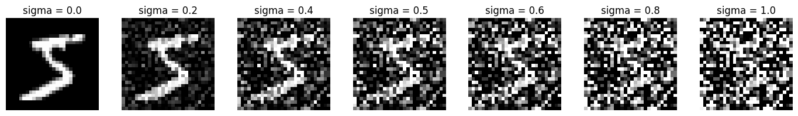
Part B 1.2.1: Training
I train the denoiser for 5 epochs at σ = 0.5, with hidden dimension 128, batch size 256, and Adam with a learning rate of 10−4. I add fresh noise to each batch during training and minimize the mean squared error between the output and the clean image. The test images and their noise are fixed for the comparisons below.
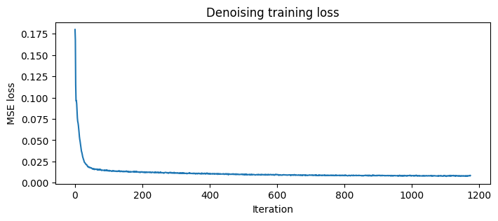
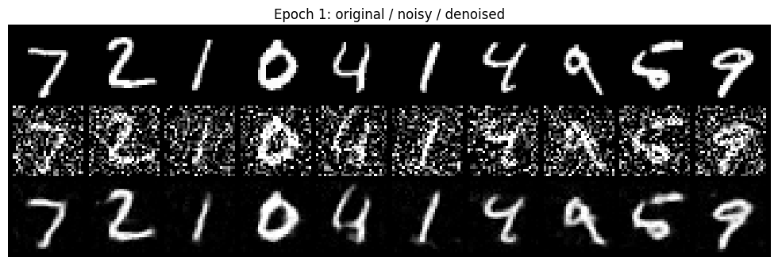
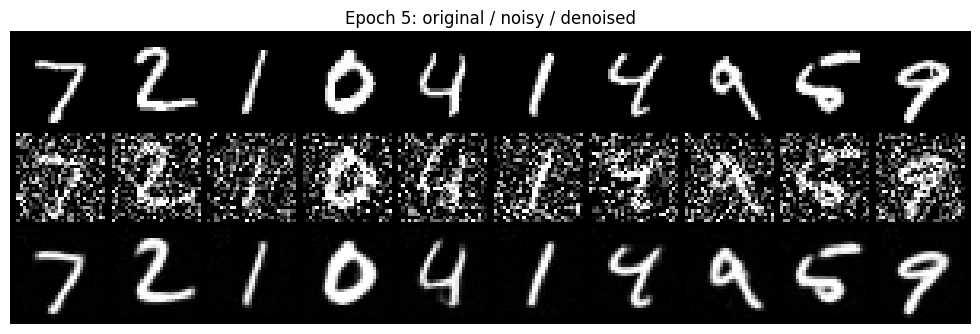
Most digits are already recognizable after one epoch. After five epochs, the strokes are cleaner, though some of the smaller details are still smoothed out.
Part B 1.2.2: Out-of-Distribution Testing
I test the trained denoiser on the same digit with the same noise scaled by each σ. The model was only trained at σ = 0.5. It still recovers the 7 at the other noise levels, but at σ = 1.0 the output has extra marks and is less clean.
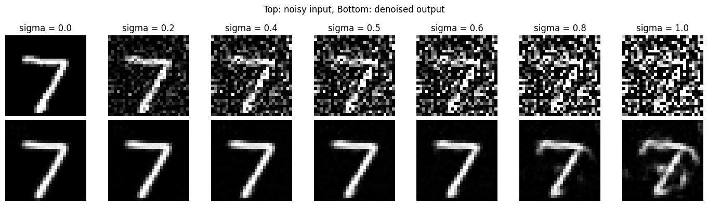
Part B 1.2.3: Denoising Pure Noise
I train a fresh UNet with the same settings, but replace the noisy digit input with independent Gaussian noise. The target is still a clean MNIST digit. The results below are almost the same blurry shape for every input, at both epochs 1 and 5.
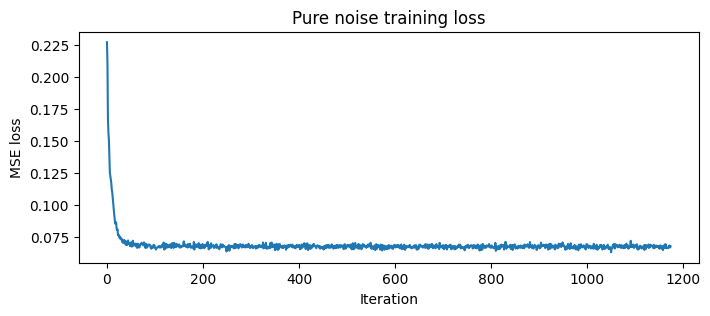
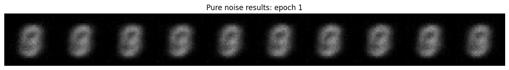
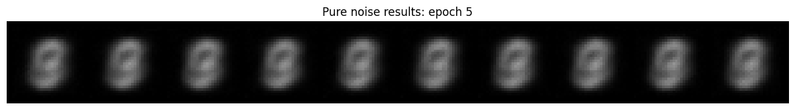
Since the input noise is independent of the target, it does not tell the model which digit to produce. With mean squared error, predicting the average training image minimizes the expected loss. The overlapping strokes of the different digits produce the blurry shape, instead of distinct samples of digits 0–9.
Part B 2.1: Adding Time Conditioning
For flow matching, I sample a clean digit, independent Gaussian noise, and a random t in [0, 1]. I interpolate between the noise and digit and train the model to predict x1 − x0. I add two fully connected blocks for time, each with two linear layers and GELU between them. Their outputs multiply the features after unflattening and after the first upsampling block.
L = E[‖vθ(xt, t) − (x1 − x0)‖²]
def time_fm_forward(
unet: TimeConditionalUNet,
x_1: torch.Tensor,
num_ts: int,
) -> torch.Tensor:
"""Algorithm 1
Args:
unet: TimeConditionalUNet
x_1: (N, C, H, W) input tensor.
num_ts: int, number of timesteps.
Returns:
(,) loss.
"""
unet.train()
# ===== your code here! ====
x_0 = torch.randn_like(x_1)
t = torch.rand(x_1.shape[0], device=x_1.device)
t_image = t[:, None, None, None]
x_t = (1 - t_image) * x_0 + t_image * x_1
target = x_1 - x_0
prediction = unet(x_t, t)
return F.mse_loss(prediction, target)
# ===== end of code ====
Part B 2.2: Training the Time-Conditioned UNet
I train for 10 epochs with hidden dimension 64, batch size 64, and Adam with an initial learning rate of 10−2. The exponential scheduler multiplies the learning rate by 0.11/10 after each epoch. The loss below is recorded at every training iteration.
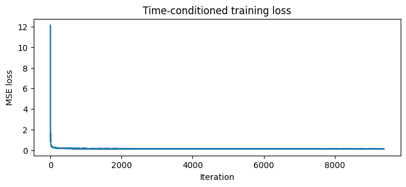
Part B 2.3: Sampling from the Time-Conditioned UNet
To sample, I start from Gaussian noise and take 50 Euler steps from t = 0 to t = 1. I use the same seed for all three checkpoints. The first epoch produces broken strokes and shapes. By epochs 5 and 10, many samples are recognizable digits, though some still have extra strokes or unclear shapes.
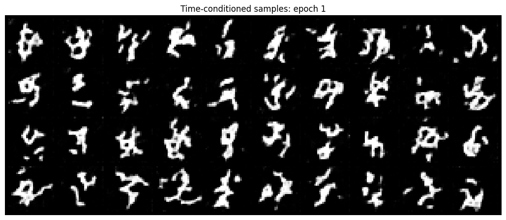
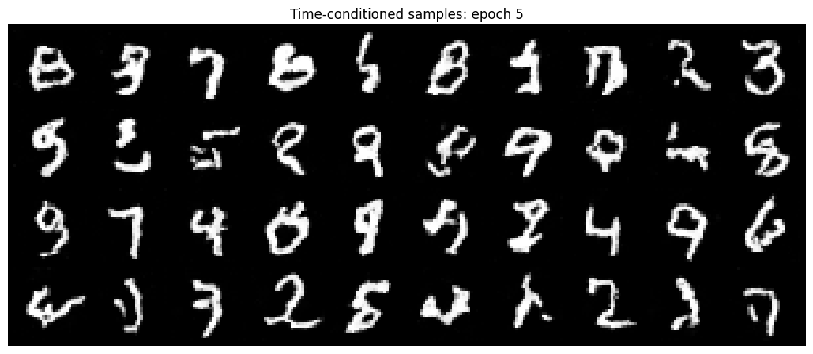
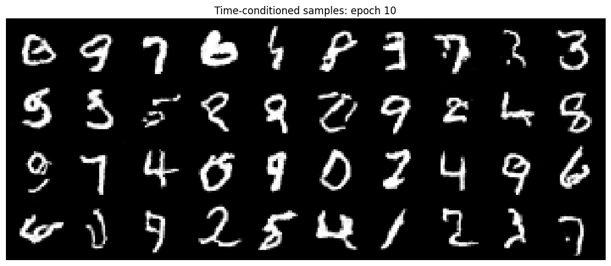
Part B 2.4: Adding Class Conditioning
I add two more fully connected blocks for the digit class, represented as a one-hot vector of length 10. At the two conditioning points, I multiply the features by the class embedding and add the time embedding. During training, I set the class vector to zero with probability 0.1 so that the model also learns to predict without a class label.
up1 = c2 · up1 + t2
Part B 2.5: Training the Class-Conditioned UNet
I train the class-conditioned model for 10 epochs with hidden dimension 64 and batch size 64. For the first run, I use Adam with an initial learning rate of 10−2 and the same exponential scheduler as before. I also train a separate model at a constant learning rate of 10−3. Both runs use the same starting seed.
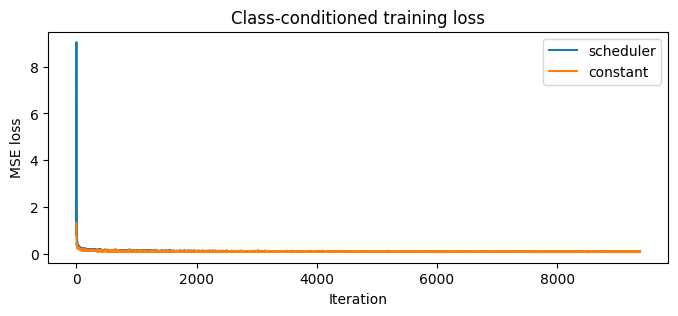
Part B 2.6: Sampling from the Class-Conditioned UNet
I generate four instances of each digit using 300 Euler steps and guidance scale 5.0. Each row corresponds to one digit, from 0 at the top to 9 at the bottom. The noise seed is the same for every checkpoint and for both training runs.
With the scheduler
Without the scheduler
To compensate for removing the scheduler, I lower the learning rate from an initial 10−2 to a fixed 10−3. I keep the model, batch size, number of epochs, and class dropout the same.
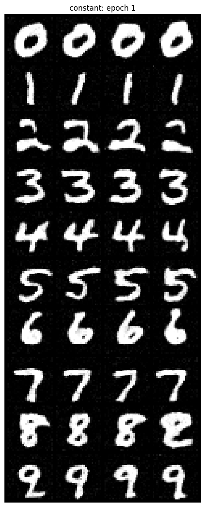
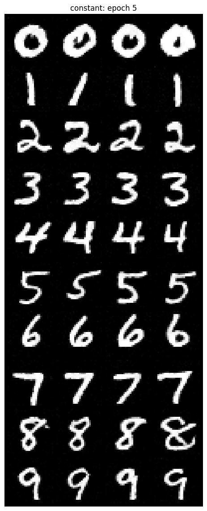
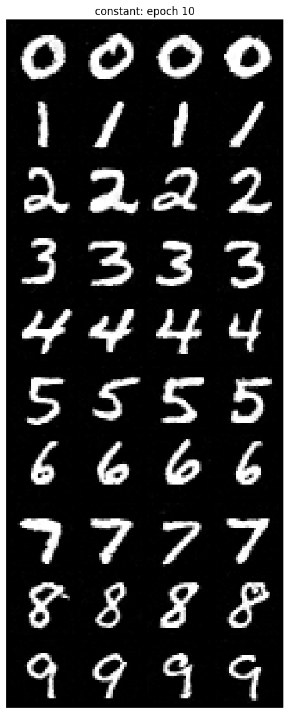
Both runs produce recognizable examples of all ten digits by epoch 10. The constant learning rate also gives clear digits early on. There are still differences in the individual strokes, but the final samples are visually similar in quality. This comparison is based on the samples above; I did not compute a separate image quality metric.